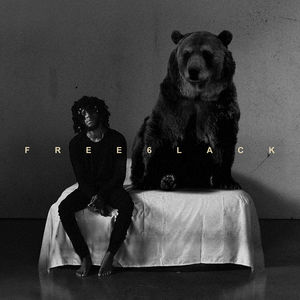

WHY DO I LOVE 6LACK AS AN ARTIST?
6LACK to me is one of the few artist we have in the industry that
is very true to himself and it shows through his music. I fell in
love with his unique sound and I've been hooked ever since. His play
on words are like no other. i close my eyes and his unique sound
instantly sootthes me.
ALBUM #1: FREE 6LACK

From a shady deal to no-good exes, 6lack releases his
LVRN/Interscope Records debut album 'Free 6lack,' an emotional gumbo
for the listener going through "regular life ish."
Track List ( = my fav
song)
- Never Know - 6lack - 04:09
- Rules - 6lack - 03:31
- PRBLMS - 6lack - 04:06
- Free - 6lack - 04:23
- Learn Ya - 6lack - 03:35
- MTFU - 6lack - 03:28
- Luving U - 6lack - 04:12
- Gettin' Old - 6lack - 03:35
- Worst Luck - 6lack - 03:26
- Ex Calling - 6lack - 03:31
- Alone / EA6 - 6lack - 09:13
ALBUM #2: EAST ATLANTA LOVE LETTER
The album’s focus on intimacy, fear, and anxiety can feel more
claustrophobic than your standard 2018 R&B album, but it grounds the
atmospheric into the introspective, and is both sultry and haunting.
Track List ( = my fav
song)
- Unfair - 6lack - 02:17
- Loaded Gun - 6lack - 03:19
- East Atalnta Love Letter - 6lack - 04:06
- Let Her Go - 6lack - 02:57
- Sorry - 6lack - 03:30
- Pretty Little Fears - 6lack - 03:28
- Disconnect - 6lack - 04:26
- Switch - 6lack - 03:27
- Thugger's Interlude - 6lack - 01:12
- Balenciaga Challenge - 6lack - 03:07
- Scripture - 6lack - 03:20
- Nonchalant - 6lack - 03:03
- Seasons - 6lack - 04:10
- Stan - 6lack - 05:04
ALBUM #3: SINCE I HAVE A LOVER
This album really emphasizes 6LACK's past relationships and how he
grows and develops into the man he is today. He talks about mistakes
, taking risks, being in love, falling out of love and just the
general ups and downs he faced in his life.
Track List ( = my fav
song)
- Cold Feet - 6lack - 02:35
- Inwood Hill Park - 6lack - 03:09
- Since I have A Lover - 6lack - 04:42
- Playin' House - 6lack - 03:33
- Fatal Attraction - 6lack - 03:16
- Sprited Away - 6lack - 03:08
- Chasing Fellings - 6lack - 01:40
- Preach - 6lack - 02:36
- Tit for Tat - 6lack - 02:13
- Talkback - 6lack - 03:04
- Wunna Dem - 6lack - 01:51
- B4L - 6lack - 03:48
- Decatur - 6lack - 02:57
- Talk - 6lack - 03:30
- Temporary - 6lack - 02:28
- Rent Free - 6lack - 03:22
- Stories in Motion - 6lack - 03:26
- Testify - 6lack - 03:51
- NRH - 6lack - 02:36